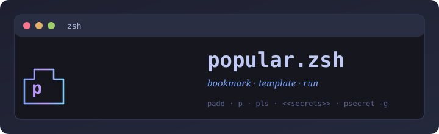

Tiny zsh shortcuts for saving, running, and templating your most-used commands — with optional secret placeholders kept out of exported files.
curl -fsSL https://raw.githubusercontent.com/sajjadRabiee/popular-zsh/main/install.sh | zsh
Save commands by name, or grab a line straight from your shell history by event number.
Run a saved command. Templates expand {{opt}}, [[pos]], and <<secret>> before exec.
Browse saved commands with template hints and secret markers shown inline.
Store sensitive values in a separate file (chmod 600). Never appears in pexport output.
Edit the full store or a single command in your preferred editor ($EDITOR or vim).
Drop into a sub-shell where saved names work directly — no p prefix. Tab completion included.
Back up, share, or merge command stores. Exports never include secrets — safe to commit.
Pull the latest popular.zsh and all modules from GitHub in one command.
$ padd gs git status $ p gs On branch main · nothing to commit # Save from your history by event number $ paddh 523 deploy-staging $ p deploy-staging
$ pls # list everything $ pls git # filter by substring $ pedit gs # edit just this command $ premove gs # delete it
$ pexport ~/my-commands.txt # safe to share — no secrets $ pimport ~/my-commands.txt # merge into current store $ pimport -r ~/my-commands.txt # replace store entirely
Three placeholder styles let you turn saved commands into small, reusable generators.
| Syntax | Style | How to pass a value |
|---|---|---|
| {{name}} | Named option | p cmd --name=value |
| [[name]] | Positional | p cmd value (left-to-right order) |
| {{name:default}} | Option with default | Omit the flag to use the stored default |
| [[name:default]] | Positional with default | Omit the arg to use the stored default |
| <<key>> | Secret | Set once with psecret -g key, never stored in the command file |
$ padd serve 'python3 -m http.server [[port]]' $ p serve 8000
$ padd serve2 'python3 -m http.server {{port}}' $ p serve2 --port=8000
$ padd hit 'curl -s http://[[host]]:{{port}}/' $ p hit localhost --port=8080
$ padd hook 'curl -H "Auth: Bearer <<token>>" $URL' $ psecret -g token Enter value for token: •••••••• $ p hook # token injected at runtime
Drop into a sub-shell where every saved name works as a first-class command. A [p] badge appears on the right side of your prompt so you always know you're inside the session. Tab completion is fully available. Type bye to return to your normal shell.
$ pcli popular shell — saved names work directly · bye to exit sajjad@mac ~ [p] → gs # runs your saved "gs" command directly On branch main · nothing to commit → list # alias for pls → add up 'docker compose up -d' → up # runs it immediately → bye
Commands and secrets live in two separate plain-text files. Both paths can be overridden with environment variables.
Each command line is name|command. pexport only writes the commands file — never the secrets file — so exports are safe to share or commit to version control.
popular.zsh is written for zsh, but bash, fish, and nushell users can use it too — as long as zsh is installed. The installer injects thin wrapper functions automatically. All shells share the same backing file.
# Add to ~/.bashrc _p_zsh() { zsh -c "source ~/.popular-zsh/popular.zsh 2>/dev/null && \"\$@\"" -- "$@"; } p() { _p_zsh p "$@"; } padd() { _p_zsh padd "$@"; } pls() { _p_zsh pls "$@"; } premove() { _p_zsh premove "$@"; } pedit() { _p_zsh pedit "$@"; } psecret() { _p_zsh psecret "$@"; } pupdate() { _p_zsh pupdate ; } pcli() { zsh -i -c "source ~/.popular-zsh/popular.zsh 2>/dev/null && pcli"; }
# Add to config.fish function _p_zsh set cmd $argv[1]; set -e argv[1] zsh -c "source ~/.popular-zsh/popular.zsh 2>/dev/null && $cmd \"\$@\"" -- $argv end function p; _p_zsh p $argv; end function padd; _p_zsh padd $argv; end function pls; _p_zsh pls $argv; end function psecret; _p_zsh psecret $argv; end function pupdate; zsh -c "source ~/.popular-zsh/popular.zsh 2>/dev/null && pupdate"; end function pcli; zsh -i -c "source ~/.popular-zsh/popular.zsh 2>/dev/null && pcli"; end
# Add to config.nu def p [...rest] { zsh -c $"source ~/.popular-zsh/popular.zsh && p ($rest | str join ' ')" } def padd [...rest] { zsh -c $"source ~/.popular-zsh/popular.zsh && padd ($rest | str join ' ')" } def pls [...rest] { zsh -c $"source ~/.popular-zsh/popular.zsh && pls ($rest | str join ' ')" } def pcli [] { zsh -i -c "source ~/.popular-zsh/popular.zsh && pcli" }